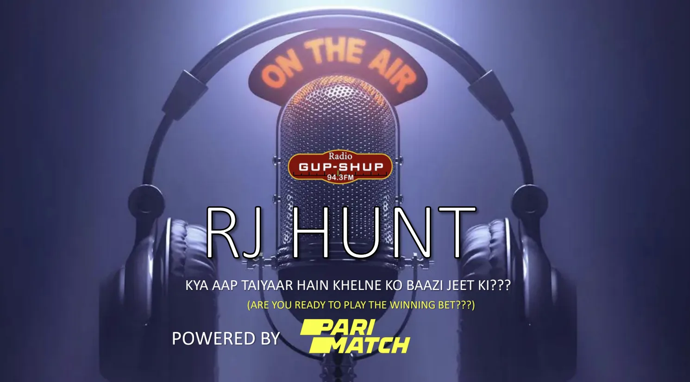

Campaign visual: "RJ Hunt" radio integration — Powered by Parimatch.
Baazi Jeet Ki
Building trust and recall for a challenger brand in India's toughest category
The Situation
Parimatch was a globally recognised iGaming brand but a distant challenger in India — the world's most competitive cricket-betting market. Two problems held it back.
First, trust: in a category where consumers are wary of who they hand their money to, a lesser-known name struggles to convert interest into deposits. Second, cultural distance: the brand read as foreign to a value-driven, multilingual, cricket-obsessed audience, while better-funded rivals were out-shouting us on spend.
I was hired as the India-market marketing lead to fix this — to create one brand idea that would earn recall and trust rather than simply buy impressions, and that could carry a full 360° push during IPL, the single biggest window in Indian sport.
What I Did
I built a nationwide brand platform that spoke to Indians in their own language. The insight was linguistic: "Baazi" is an everyday Hindi word for a game or a bet — instantly understood, quintessentially Indian, easy to say, and loaded with cricketing and challenge associations (ballebaazi, gendbaazi, sattebaazi). I anchored the campaign on "Baazi Jeet Ki" — the winning bet, a line that carried the category message without sounding foreign, then launched and orchestrated it as the connective idea across the full ecosystem I owned.
Broadcast & OTT: L-band & squeeze-up sponsorships — Star Sports, Hotstar, 15+ regional channels in 5 languages, plus a hero TVC
Radio: Exclusive integration with the #1 network across 20 cities — bespoke jingle, RJ-led shows, on-air contests, 7M+ Audio-OTT impressions
OOH: Goa hoardings (25M impressions), Mumbai bus shelters (1.8M), 250 branded cabs — one creative platform
Digital & Social: Twitter #1 national trends, Instagram AR mask, influencer programme (~136M reach), dedicated baazijeetki.in microsite
PR & CRM: Earned coverage in Sportskeeda, Amar Ujala, My Khel — wired into acquisition offers, tournaments, and lifecycle journeys
The Commercial Result
- Revenue up ~25% year-on-year, peaking at ~US$800K per day during IPL.
- Organic branded search on Google up ~30% — and "Baazi Jeet Ki" became the recognised tagline for Parimatch India (it still surfaces as the brand's line in search today).
- Top-5 brand recall in the category within a year, validated by independent Kantar research — from a standing start against far bigger spenders.
- New depositing players up 40% over the following 12 months, as awareness converted into acquisition.
"What I'm proudest of isn't the media weight — it's that a challenger brand earned trust and recall by sounding like it belonged. The line outlived the campaign; it's still the brand's signature in India — as Google's own AI Overview confirms today."
Exhibit
✦ AI Overview
The official and most widely used tagline for Parimatch in India is "Baazi Jeet Ki" (meaning "The Bet for Winning").
Exhibit: a Google search for "tagline for parimatch india" returns "Baazi Jeet Ki" as the brand's official line.